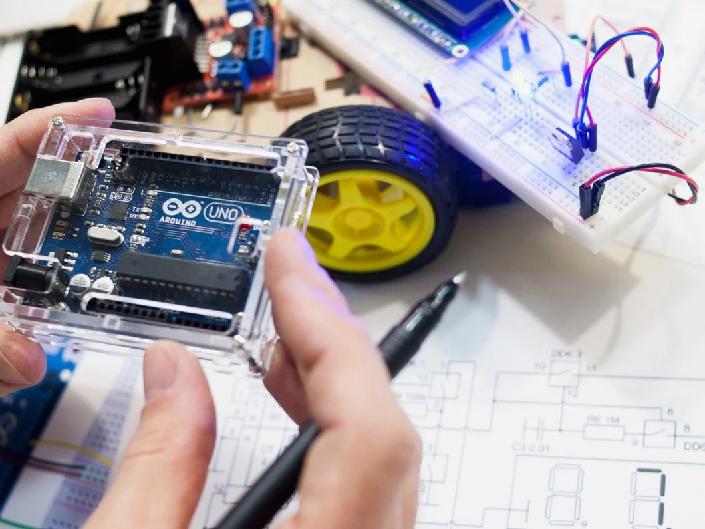
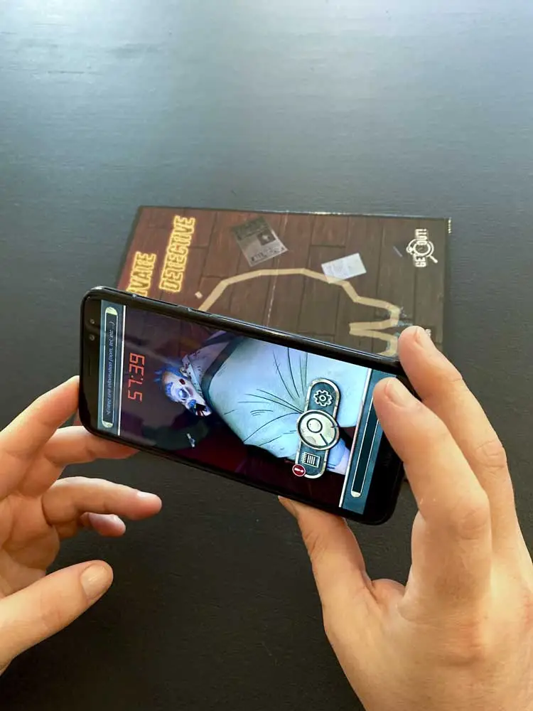
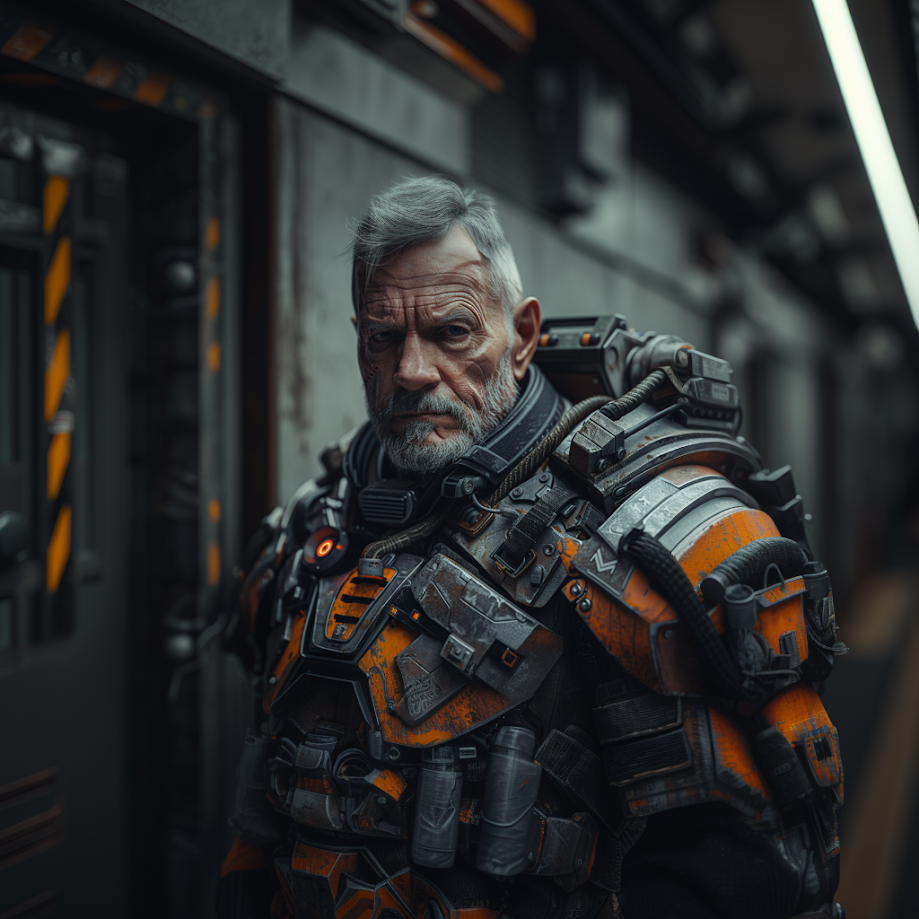

A propos ...

Depuis quelques années, je conçois des programmes informatiques, et cela me passionne.
J'ai trouvé une énorme satisfaction dans l'apprentissage de la programmation. Ainsi, j'ai passé mes soirées et week-ends à comprendre et apprendre tout d'abord le C,
puis quelques uns de ces cousins.
Avec les années, j'ai conçu des logiciels (Windows, iOS, Android...), principalement pour la création de jeux vidéo, et je ne compte pas m'arrêter en si bon chemin...
Electronique - Arduino
Lors de la professionnalisation de l'escape game, des obstacles sont apparus : la conception de trucages et la gestion des différents éléments de la salle (électro-aimants, lumières, vidéos...) sur un ordinateur central. À l'époque, aucune solution n'existait, et il a fallu se former à la domotisation qui n'était pas encore grand public. C'est ainsi que j'ai concu une interface gérée par un ordinateur central qui communique avec les différents Arduino de la salle, permettant de faciliter son rangement et son automatisation (animation sons et lumières, difficulté...).
C# - Unity AR/VR
Initialement, Unity m'a aidé à concevoir un logiciel contrôlant les différents modules d'un escape game. Puis, je l'ai utilisé pour amener l'escape game en dehors des salles. Ce fut un succès et le début d'une nouvelle aventure. J'ai continué à coder pour concevoir une jeu vidéo, puis un autre, et encore en un autre, obtenant une solide maîtrise du logiciel, que ce soit au niveau de la programmation, de l'architecture, de l'optimisation et des exports.
En savoir plusl'IA GENERATIVE

Mon intérêt pour l'IA générative a commencé avec l'exploration de l'image à travers l'apprentissage de Midjourney, DALL-E et Stable Diffusion.
Ensuite, les possibilités offertes par ChatGPT se sont rapidement révélées, et j'ai commencé à essayer d'autres modèles. Notamment en local,
afin de concevoir des modèles personnalisés, ou encore des extrapolations de scénarios basées sur des données existantes.
Cependant, je n'ai fait qu'effleurer la surface, et les nouveautés évoluent plus rapidement que le temps que je peux leur consacrer...
qui est pourtant déjà bien conséquent.